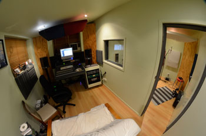

On the beat is a new project for drummer Andy Griffiths. Andy has been playing drums for the last 13 years and after playing in bands and doing some session work, Andy decided to open his own studio. Andy has played in bands that cover a large variety of styles, everything from big band, punk and country and everything in between. Andy has had a long interest in sound and recording and after a few years behind the desk sees him go behind the glass. Andy is a less is more kind of guy. Andy's hope for the studio is that it can become a foot up for many young bands looking to get a break in the music industry.
For more information contact Andy.
Client List
- Dayburn
- Monica Watson
- Nate James
- Falling Short
- Josh Kerr
- Andrew Lennox
- Groves Christian College
- Livingstone Christian College
- Drew Gillies
- Chamila
- Megan Achilles
- Pathetic
- CJ's Night & Day
- Brisbane Male Voice Choir
- Jess & Ted
- All Ends in Silence